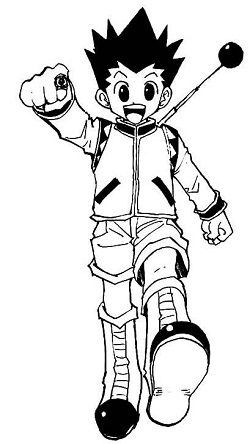

G O N F R E E C S S
Gon Freecss (ゴン = フリークス, Gon Furīkusu) es el protagonista principal de la serie de manga y anime Hunter × Hunter. Está en búsqueda de su padre, el famoso cazador Ging Freecss.
Gon es un chico atlético, rústico y agradable que está en busca de aventura. Además, no es muy bueno en matemáticas. Sin embargo, después de haber pasado mucho tiempo en el bosque cuando era niño, él es muy bueno con los animales. Gon es un intensificador, que son conocidos por ser de mente simple y determinados.
| D E B U T |
|---|
| MANGA - Capitulo 001 |
| ANIME - Episodio 01 |
| V O Z |
| JAPONES - Rica Matsumoto (Piloto OVA) |
| - Megumi Han (2011) |
| P E R F I L |
| SEXO - Masculino |
| EDAD - 12 años |
| CUMPLEAÑOS - 05 de Mayo |
| Color de Cabello - Negro Verdoso |
| Color de ojos - Cafe |
| Altura - 1.54 m |
| Peso - 45kg |
| Tipo de Sangre - B |
| Ocupación - Cazador |